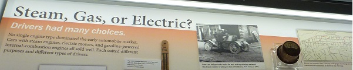

Hanangくんのチョコレートケーキ
短期留学で3か月間ほど朝倉研に滞在していたHanangくんがチョコレートケーキを作ってきてくれました．
ケーキ作りは2回目ということでしたが，それが信じられないくらい本格的で美味しいケーキでした！

Hanangくん，ありがとうございました！

短期留学で3か月間ほど朝倉研に滞在していたHanangくんがチョコレートケーキを作ってきてくれました．
ケーキ作りは2回目ということでしたが，それが信じられないくらい本格的で美味しいケーキでした！
Hanangくん，ありがとうございました！
Copyright © 2022 | Asakura Laboratory